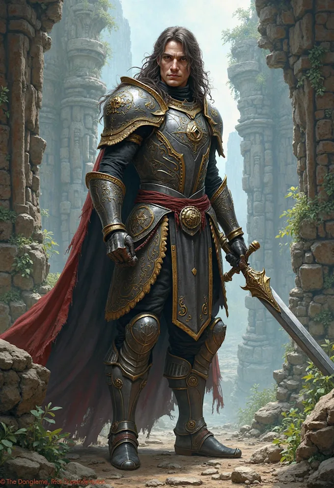
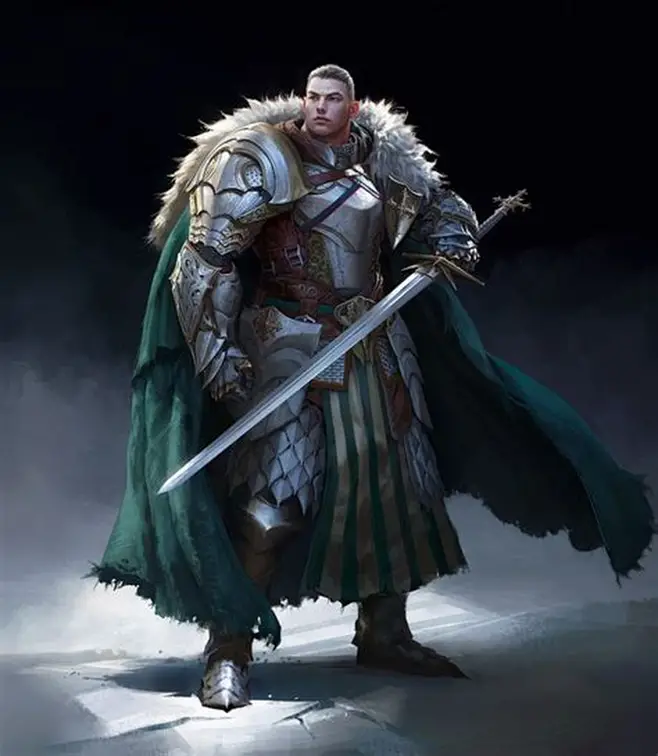
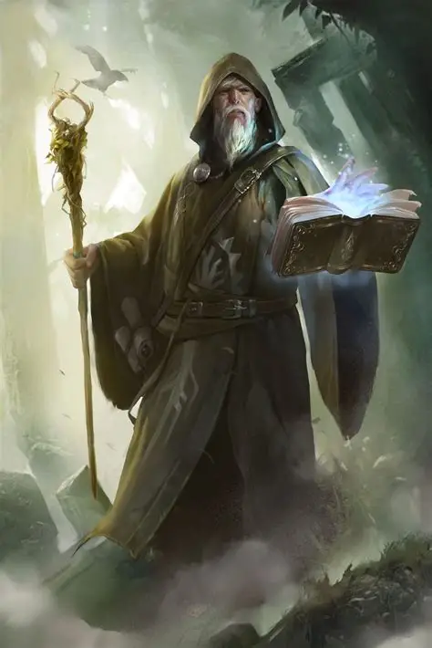
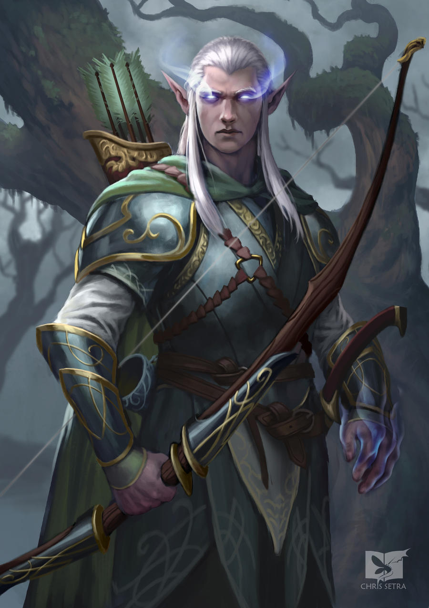
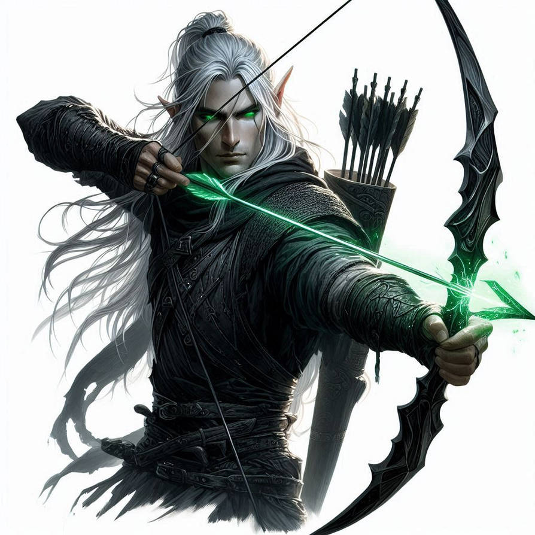
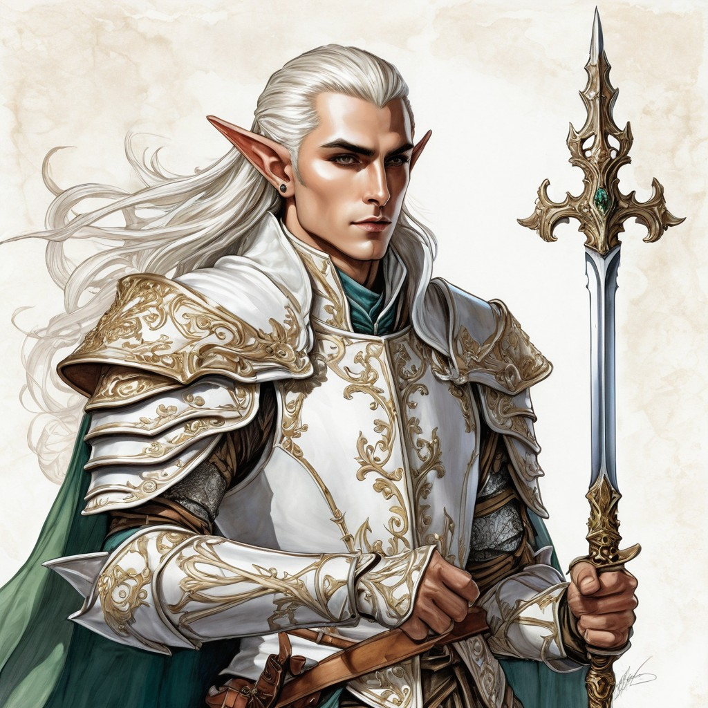
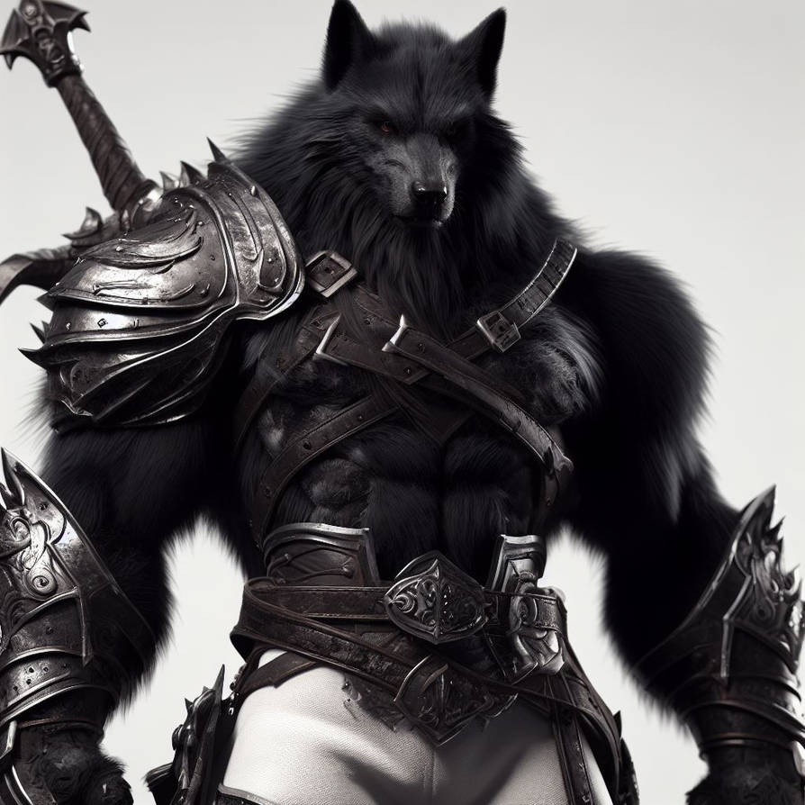
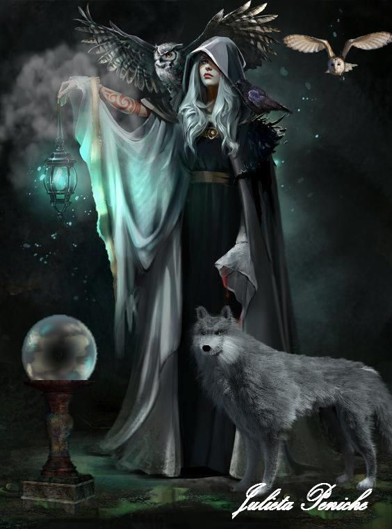
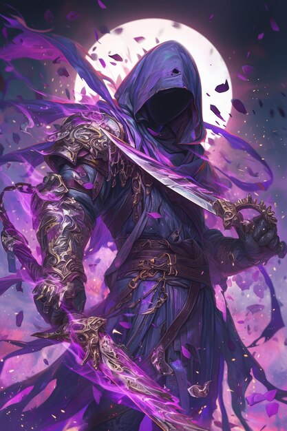
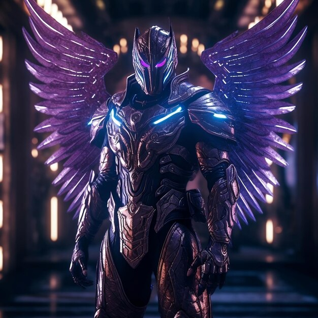

Mapa do Mundo
Raças e Classes
Passe o mouse por cima de cada classe para saber mais sobre ela

Humano
São humanos normais, a raça mais equilibrada. É possível obter força física ou magia.

Guerreiro: Mestre no combate corpo a corpo e alta defesa

Mago: Especialista em magias e ataques em área

Elfo
São os mais sábios e inteligentes. Costumam ser pacifistas, mas você não quer vê-los irados.

Arqueiro: Especialista em ataques à distância com muito dano

Sacerdote: Especialista em magias de cura e suporte

Selvagem
Vivem na selva e têm boa relação com os animais. Seres brutos com grande resistência.

Feiticeira: Talento natural em controle de animais e dano mágico

Bárbaro: Resistência insana, defesa muito alta, um verdadeiro selvagem!

Mercenário
Vivem nas sombras. Grande capacidade de dano, agilidade e furtividade mortal.

Assassino: Furtividade e assassinato, nisso, ninguém supera o assassino

Arcano: Espada? Cajado? Ele mistura magia com dano físico, e ataca somente com os punhos limpos.